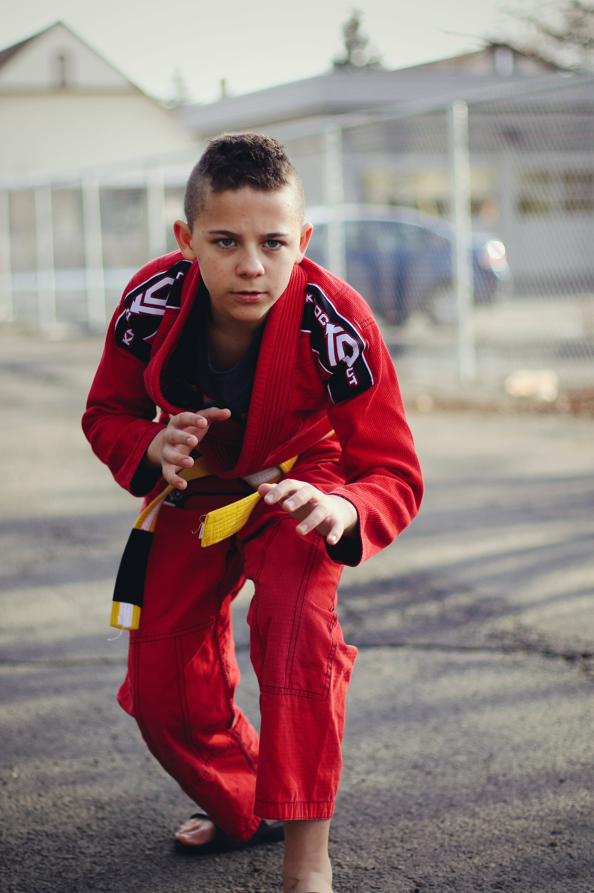

Over het examen
Om in het bezit te komen van een zwarte band Jiu-Jitsu moet je een danexamen Jiu-Jitsu afleggen, welke georganiseerd is door de JBN. Meer informatie? Klik op de knop hieronder om er meer over te lezen.
Lees meer

Om in het bezit te komen van een zwarte band Jiu-Jitsu moet je een danexamen Jiu-Jitsu afleggen, welke georganiseerd is door de JBN. Meer informatie? Klik op de knop hieronder om er meer over te lezen.
Lees meer